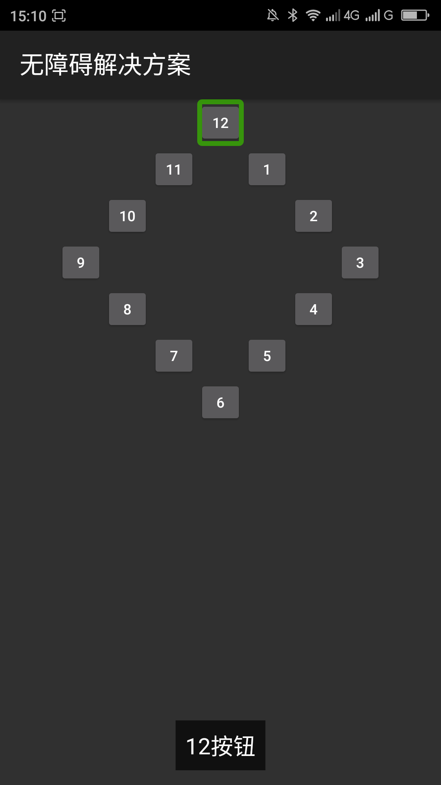

控制无障碍焦点导航的顺序_____20160511
【问题描述】
用户使用焦点导航的时候，焦点是通过从一个控件传递到另一个控件，这由焦点命令来确定其指向。焦点移动命令是根据一种算法，意在在某一特定方向上寻找相邻的元素。在极少数情况下，默认的算法可能不匹配具体的命令，从而不符合你的用户界面。这个算法是从左到右、从上到下的进行焦点导航的。有时候这种默认的焦点导航顺序会让利用焦点导航的用户无法理解视图界面，例如界面上利用按钮布局成一个时钟，按照默认的焦点导航这个时钟会导航的很混乱。无障碍焦点是无障碍服务的焦点，如屏幕阅读器Talkback在触摸屏下利用手势导航的焦点顺序。
【问题代码】
下面的代码焦点导航的顺序很乱，用户无法知道这是一个时钟。在开启TalkBack的情况下载触摸屏用手势浏览，单指从左向右滑动浏览的焦点顺序是：界面标题，”12“、”11“、”1“、”10“、”2“、”9“、”3“、”8“、”4“。”7“5”、“6”。 注：代码中使用的style/clockFacenum的xml键附1
复制内容
【问题解决方案描述】
在android api22以及以上可以使用android:accessibilityTraversalAfter、android:accessibilityTraversalBefore两个属性或者setAccessibilityTraversalAfter()、setAccessibilityTraversalBefore两个方法设置前一个焦点、后一个焦点控件的id。此解决方案主要针对在触摸屏下开启TalkBack等其他辅助功能的焦点顺序不合理的问题。
【前后效果图对比】
|  | |
| 优化前，触摸滑动浏览焦点顺序：12-11-1-10-2-9-3-8-4-7-5-6； | 优化后，触摸滑动浏览焦点顺序：12-1-2-3-4-5-6-7-8-9-10-11-12； |
【扩展】
【更多】
【附1】 style/clockFaceNum文件